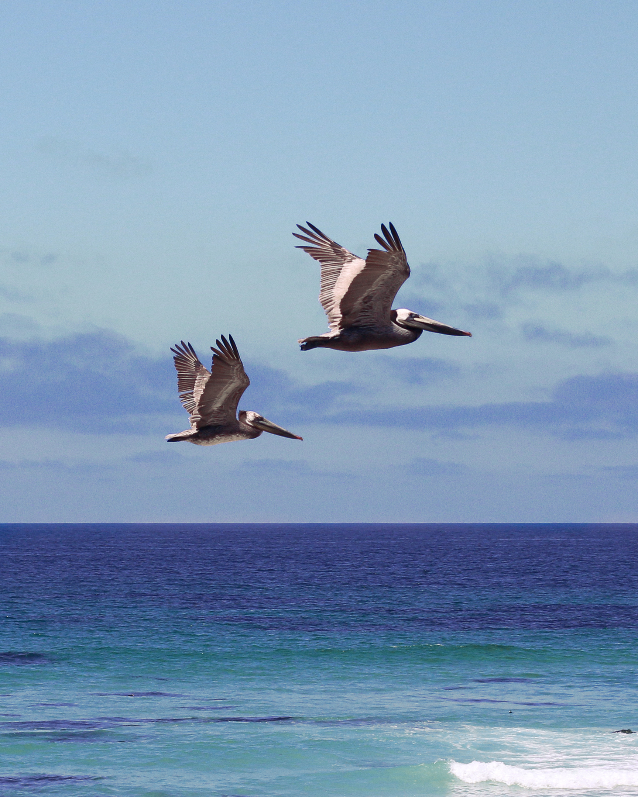
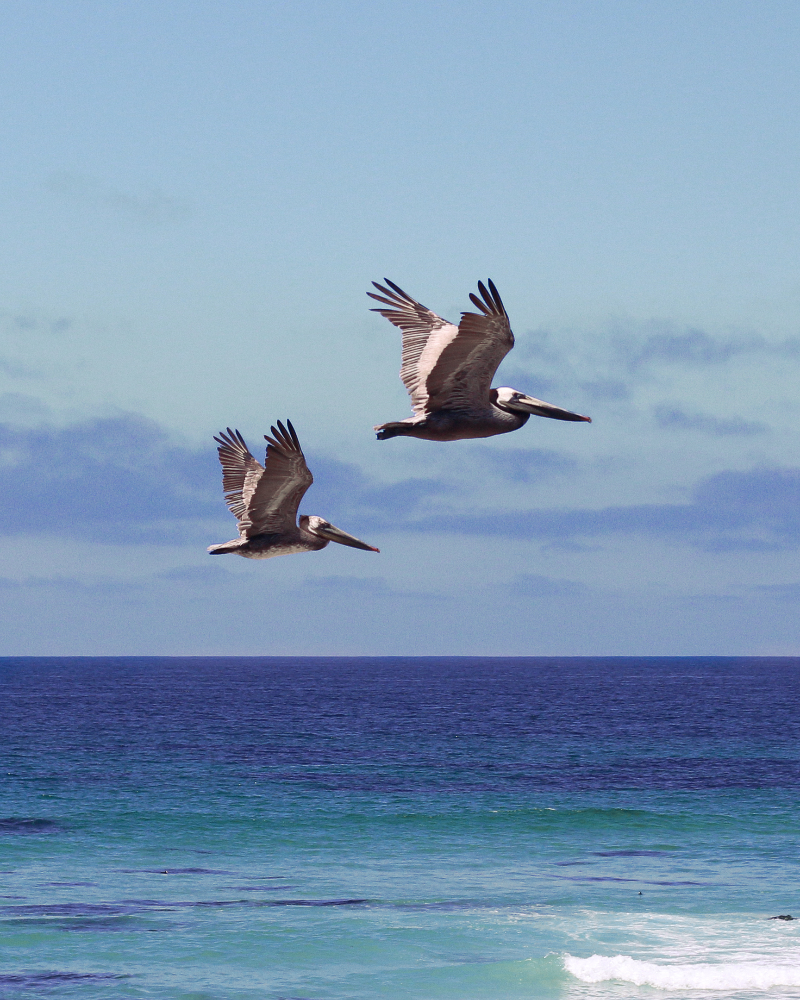
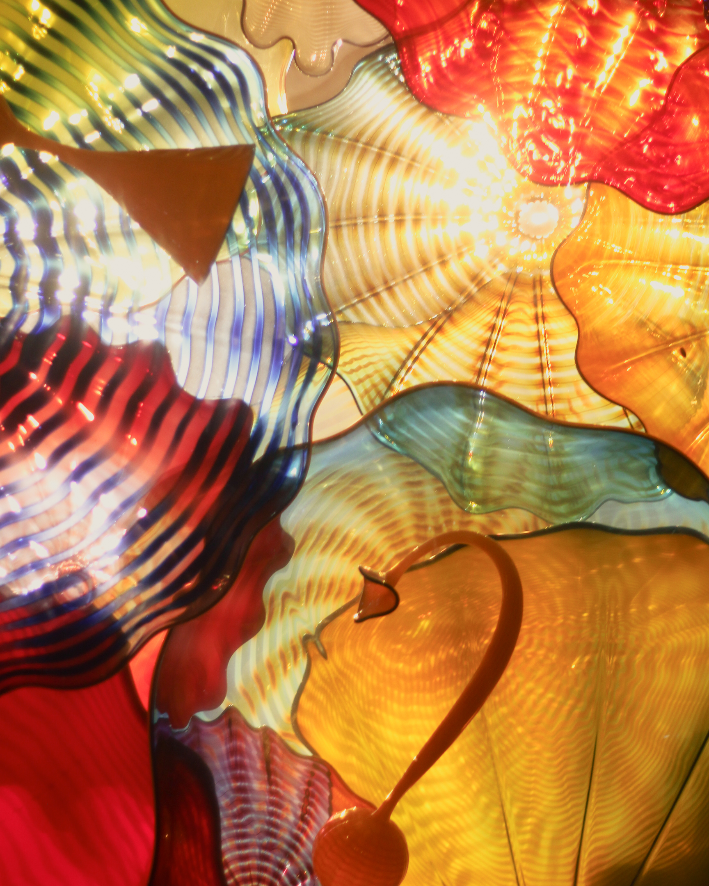
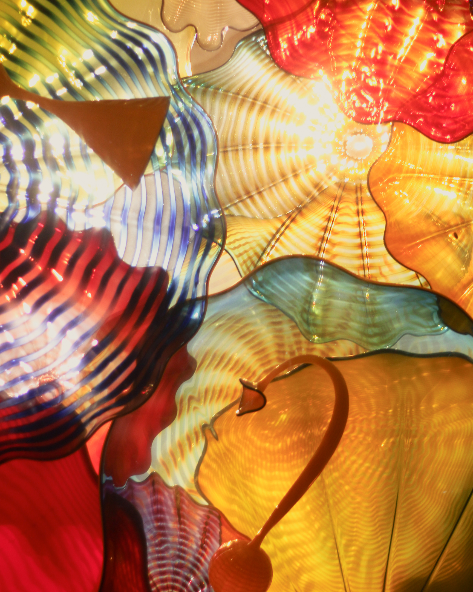
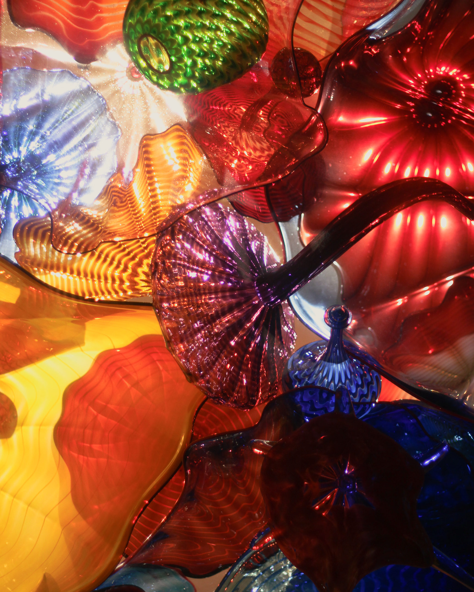
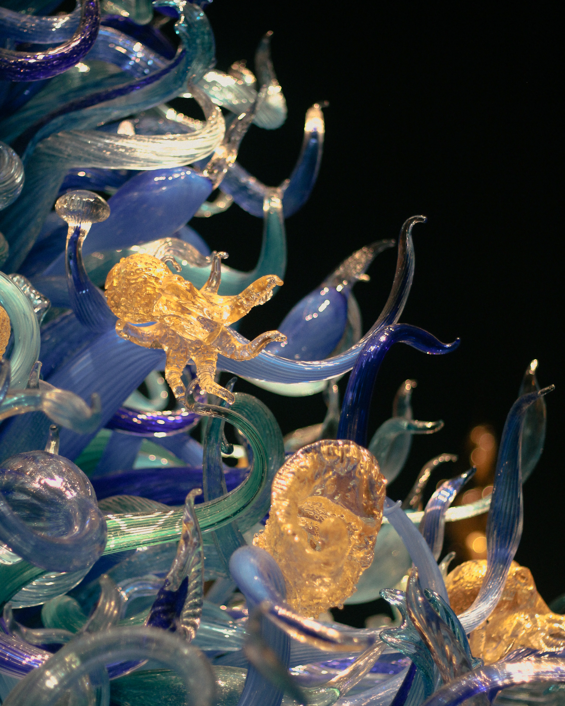
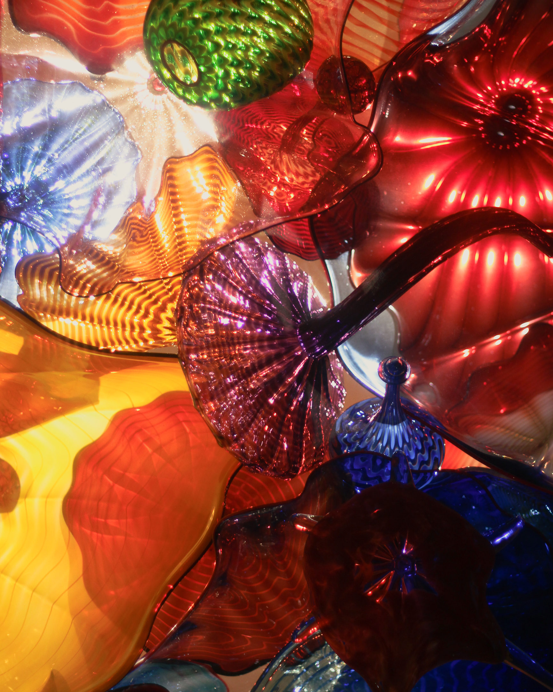
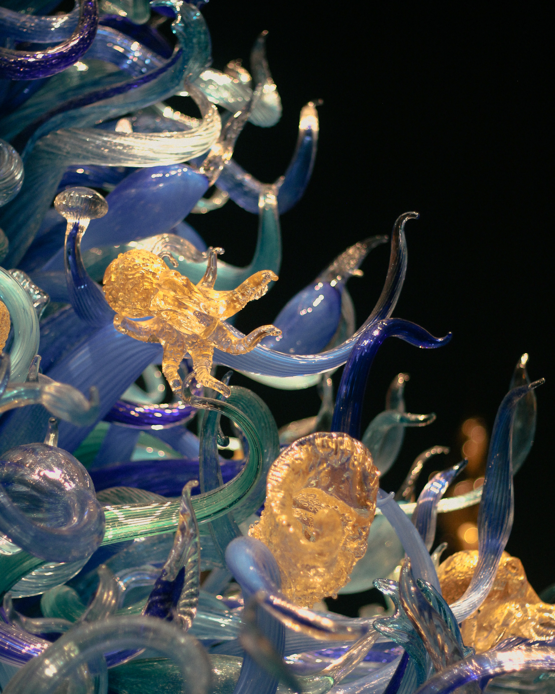

Photography
All of these photos were shot on a Canon Rebel T5i (50mm f/1.8 lens), with post-processing in Adobe Lightroom. (By the way, the blue things are called by-the-wind sailors, they are related to jellyfish, and they are alive. They get pushed ashore by strong wind and ocean currents because they have sails, and when they get beached they slowly decay and lose their color.)
 



 

 


